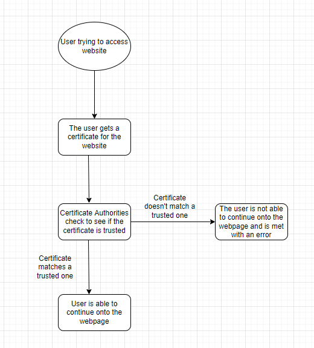

Evan Ye
Allen STEAM Center
Advanced Computer Science III
Ben Yaakov
The Internet carries data across the globe, but not all websites are safe. Popular websites can be easily recreated and traffic could be redirected there. Most websites with HTTP web connections fall victim to this, and only when you see HTTPS means that the website is secure. The S in HTTPS means that a website is secured, encrypted, and not susceptible to any eavesdropping, but that may not be the case anymore.
To ensure user security and privacy, many websites are transitioning from HTTP to HTTPS connections, which are known as SSL or TLS (Secure Sockets Layer and Transport Layer Security). Data sent back and forth over HTTPS is encrypted by technology no one knows how to break. In the early Internet days, these connections were reserved for logging into a site or when submitting sensitive information like credit card numbers. Although this is a good solution to protect privacy, many employers and educational institutions are unhappy that they aren't able to see their employees' and students' Internet usage. To solve this, they started using new technology known as HTTPS Proxy Appliances, which guarantees Internet browser privacy and security, but they are able to have full access to everything the user enters into their web browser.
An example of attacks against privacy and security is known as a Man-in-the-Middle (MitM) attack. This is when an attacker intercepts communication between two parties to eavesdrop. As a result, attackers might be able to steal login credentials, personal information, or sabotage communications and corrupt data. Attackers do this by either interfering with networks or creating a fake network that can be controlled by attackers. These attacks are dangerous because attackers could seize information or manipulate data, as well as installing malware. (Arampatzis)
Many years ago, a solution was made for both the need for Internet privacy and security, and this concept has been used to this day. A third party assures that our encrypted traffic is going only to the website we want it to. The third parties are known as "Certificate Authorities" (CA) where websites prove their identity in the physical world using incorporation documentation or telephone numbers. Once the CA verifies the website it signs the site's security certificate which contains an assertion of its identity. If a corporation or educational institution wants to monitor every Internet action of its employees or students, they need to add additional "Pseudo Certificate Authority" to their users' browser or computers.
Although SSL interception can't be prevented, it can be detected because it's not possible to completely trick any security certificate. All SSL-intercepting proxy appliances have to provide a fake spoofed certificate containing a public key that has the matching private key. (Kirijazovas) This key is in the form of a hash. A hash will be most effective it completely changes even when the SSL certificate barely changes. The hash can't be the same as the remote server's , and this means that no matter how much SSL Proxy Appliance wants to duplicate a remote server’s certificate, it can't and the certificate's fingerprint can be viewed. (Zola) However, in some cases, a false positive match can happen which is when the certificate looks like it was fake but it's the real one. The opposite could also happen where a fake certificate looks real, when it's not, and this is known as a false negative.(Bellairs)
The only time the school has a right to eavesdrop on communications is during school hours on the school Internet. The school should not be able to eavesdrop while students are at home, because that is an invasion of privacy. At school, however, admins should be able to monitor what students are looking up to prevent cheating or check inappropriate searches. At Allen High School, students' Internet usage is being monitored.
Kirjazovas, V. (2020, April 16). What is an SSL proxy and how does it work? Oxylabs. Retrieved August 28, 2022, from https://oxylabs.io/blog/what-is-an-ssl-proxy-and-benefits
Zola, A. (2021, June 3). What is hashing and how does it work? SearchDataManagement. Retrieved August 28, 2022, from https://www.techtarget.com/searchdatamanagement/definition/hashing
Arampatzis, A. (n.d.). What is a man-in-the-middle attack and why is it so dangerous? Venafi. Retrieved August 28, 2022, from https://www.venafi.com/blog/why-are-man-middle-attacks-so-dangerous-venafi
Bellairs, R. (n.d.). What is a false positive? how to identify false positives and false negatives. Perforce Software. Retrieved August 28, 2022, from https://www.perforce.com/blog/qac/what-are-false-positives-and-false-negatives